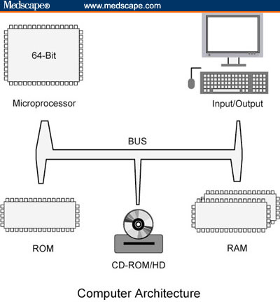

Lesson 1
Computer Hardware Architecture
Computer architecture has been studied for a long time, and has many details. Still, many of the most advanced machines today still use the same basic architecture of machines of old. They contain:
-
Processors which performs instructions (reading memory, adding numbers, sending signals to video/sound, etc)
-
Memory which stores data. It's broken up into two categories primary and secondary
Primary memory is faster than secondary memory. It holds the information that the computer needs quickly, such as the web page being viewed, and the instructions for any programming running. Comparing it to the human brain, primary memory would have the thoughts your thinking right now, such as "This stuff is hecka weird!".
Secondary memory is slower, but generally cheaper and bigger. On a modern day personal computer it holds all the local files and applications for the computer and is generally referred to as your hard-drive. Again, comparing it to the human brain, secondary memory would be memories you aren't thinking about now, but might later.
- Busses connect memory, IO, and processors together.
-
IO is short for Input/Output. Input's and outputs can be anything. Standard IO currently comprises of a Mouse, Keyboard, Screen, Camera, Speakers, Microphone, CD-Drives, USB, Firewire, DVI, Ethernet and Wifi. Still, many stranger devices exist such as
-
Brain Computer Interfaces (BCI)
- Very Dorky Gloves
- Seismometers
- Eye Trackers
- Smell-o-meters
-
Brain Computer Interfaces (BCI)

It looks pretty hard to understand right? Well, this isn't the first over complicated graph you'll see. Just be glad it's not this
Activities
You are the computer
Are you up to being a computer?
I am the computer
How to make a peanut-butter sandwich
Assignment
No assignment yet...